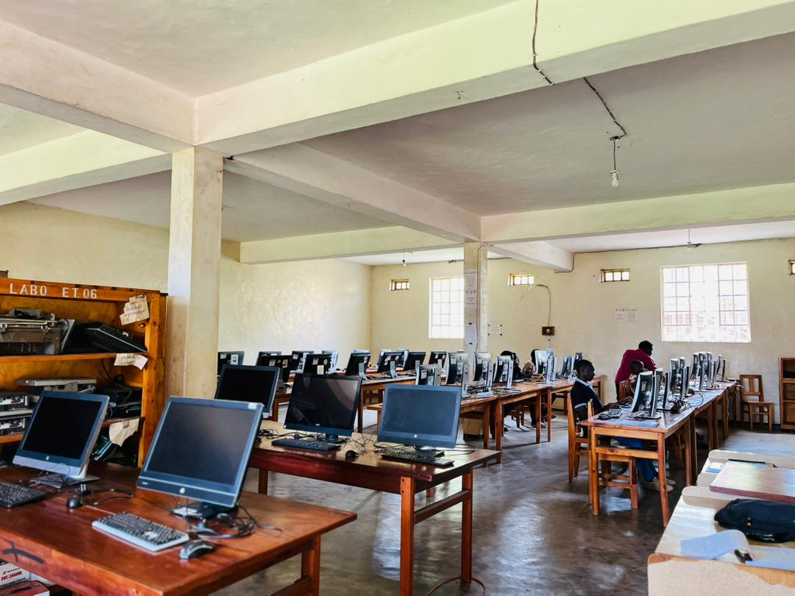

VEUX-TU UNE AIDE?
BIENVENUE SUR NOTRE CAMPUS
Voir plus
Bibliotheque et resource humaine
La bibliothèque universitaire joue un rôle essentiel dans le parcours académique des étudiants ainsi que dans les activités de recherche...
En savoir plus
Laboratoire informatique
Le laboratoire informatique de l’université constitue un espace moderne dédié à l’apprentissage pratique et au développement des compétences numériques...
En savoir plus
La télécommunication au sein du campus
Grâce au réseau Wi-Fi Starlink, l’université améliore l’accès à Internet pour la recherche scientifique, les cours en ligne et la communication numérique...
En savoir plusÀ propos
Université Adventiste de Lukanga
À propos de l’UNILUK
Une université chrétienne au service de la communauté.
Mission
S'appliquer à developper et à fournir une éducation chrétienne holistique de qualité équilibrée du point de vue physique, intellectuel, moral, social, spirituel et professionnel...
Vision
Former pour l'excellence au service en inculquant un sens d'intégrité, d'initiative, de perséverance, d'adaptabilité et de confiance en Dieu.
Valeurs
- Intégrité et discipline
- Respect de l’humain
- Esprit de service
- Excellence académique
Pourquoi nous choisir
Les avantages de choisir d’étudier avec l’UNILUK :
- Des enseignements de qualité
- Des diplômes reconnus
- Des enseignants qualifiés
Facultés
Université Adventiste de Lukanga
Nos facultés
Un parcours académique structuré par domaines de formation.
UNILUK
Domaines organisés (système LMD)
Sciences de l'Homme & Société / Théologie
Licences & Masters (théologie biblique, systématique, appliquée, pastorale...)
Sciences et Technologie
Sciences informatiques, génie civil...
Sciences de la Santé
Santé publique & Science des aliments / Nutrition / diététique.
Sciences Agronomiques & Environnement
Sciences de la production végétale et environnement.
Sciences Économique & Gestion
Sciences économiques & management (systèmes d’informations, finance, comptabilité & audit...).
Administration
Une administration proche, claire et orientée service
Notre rôle
L’administration coordonne les activités académiques, financières et sociales afin de garantir un environnement d’étude organisé...
Rectorat
Orientation institutionnelle, coordination générale et représentation.
Secrétariat général académique
Inscriptions, dossiers étudiants, attestations et calendrier académique.
Finances
Gestion des frais académiques, paiements et reçus.
Affaires étudiantes
Vie au campus, accompagnement et activités communautaires.
Campus
Dortoir & loisir
Vie au Campus
Dévotions, enseignements et activités qui encouragent le caractère.
Dortoirs
3 dortoirs : Dortoir fille Plaza, Dortoir garçon HOMME, Dortoir garçon ATLANTA.
Voir les détailsSport et Loisirs
Football, basketball, volleyball, tennis, footing… Renforcement de l’esprit d’équipe et de la discipline.
Voir les détailsGuest House
Un hôtel réservé aux visiteurs et aux assistants qui souhaitent passer la nuit.
Voir les détailsAdmission
Université Adventiste de Lukanga
Critères d’admission
Les dossiers ci-dessous sont exigés pour toute demande d’admission.
- Diplôme d’état
- Bulletins scolaires
- Photo passeport
- Acte de naissance
- Aptitudes physiques
- Paiement des frais d’inscription
- Choix de la faculté ou filière
Préparez votre dossier
Les documents doivent être lisibles et au format numérique (PDF/JPG/PNG).
Formulaire de préinscription
Nos institutions
Apprenez davantage sur nos institutions
Nos institutions
Découvrez les différentes institutions qui composent l'Université Adventiste de Lukanga.
Université Adventiste de LUKANGA (UNILUK)
Programmes de licences et master dans plusieurs facultés.
VISITERISTM/L (Institut supérieur des techniques médicales)
Formation santé (licence jusqu'au Master) depuis 2012.
VISITERISTA (Institut supérieur des techniques Adventistes)
Filières techniques : formation des techniciens (ville de BENI).
VISITERCentre de recherche
Nos centres des recherches
Les centres des recherche
FRIDI, GACI, GREG, GREP, GACIM…
FRIDI
Foyer de recherche pour le développement intégré et la publication de vos livres, journaux et articles.
VISITERActualités
Université Adventiste de Lukanga
Actualités
Restez informé des dernières nouvelles et événements de l'UNILUK.
Inauguration du nouveau laboratoire Informatique
en mai, l'UNILUK a inauguré son nouveau laboratoire Informatique, équipé des dernières technologies pour la recherche Informatisé"...
Lire plusConférence sur le développement durable
Le 30 octobre 2024, l'UNILUK a organisé une conférence sur le développement durable, réunissant des experts locaux et internationaux pour discuter des enjeux environnementaux...
Lire plusQuestions fréquentes
Informations clés sur l’UNILUK (Université Adventiste de Lukanga).
Quels sont les critères d’admission à l’UNILUK ?
Les demandes doivent inclure : diplôme d’état, bulletins scolaires, photo passeport, acte de naissance, aptitudes physiques, paiement des frais d’inscription et choix de la faculté (filière).
Quels documents sont exigés pour la préinscription ?
Le formulaire de préinscription demande notamment : votre identité (nom, prénoms, date de naissance), et des pièces justificatives en format numérique (PDF/JPG/PNG selon les champs du formulaire).
Y a-t-il plusieurs facultés à l’UNILUK ?
Oui. L’UNILUK propose plusieurs domaines de formation organisés selon le système LMD :
Sciences de l’Homme & Société / Théologie, Sciences et Technologie, Sciences de la Santé, Sciences Agronomiques & Environnement, Sciences Économique & Gestion.
L’UNILUK propose-t-elle des logements (dortoirs) ?
Oui. Le campus dispose de trois dortoirs : Dortoir fille Plaza, Dortoir garçon Homme et Dortoir garçon Atlanta.
Quels sports et loisirs sont proposés sur le campus ?
L’université encourage les activités sportives comme le football, basketball, volleyball, tennis, footing… pour renforcer la discipline et l’esprit d’équipe.
Quelles sont les activités de recherche et les centres existants ?
L’UNILUK dispose de centres de recherche tels que FRIDI, GACI, GREG, GREP et GACIM, orientés vers le développement et la publication des travaux ainsi que des activités de recherche dans différents domaines.
Comment contacter l’UNILUK ?
Vous pouvez contacter l’université par téléphone ou e-mail. Les informations se trouvent dans la section “Contactez-nous” (adresse, téléphone, e-mail, horaires).
Nos coordonnées
Adresse
RDC, Nord-Kivu, Lubero, Lukanga
Téléphone
Email
Horaires
Lundi - Vendredi : 08h00 - 17h00